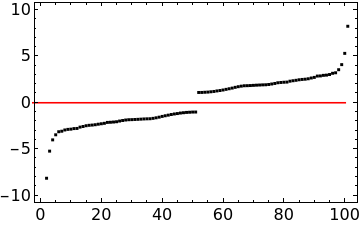
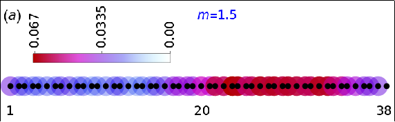
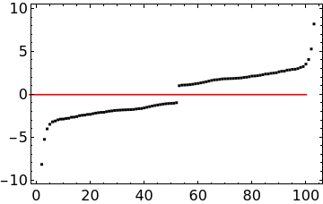
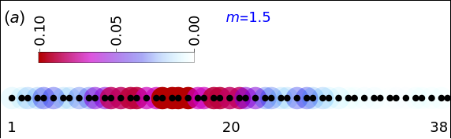
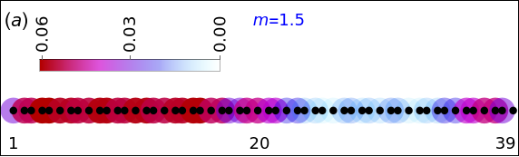
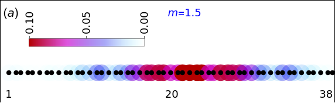

I take a 20x20 periodic system, and fix
\(y_{up} = \frac{2}{1+\sqrt{5}}(x - 1) + 3 \)
and \(y_{down} = \frac{2}{1+\sqrt{5}}(x - 1) + 1 \)
The elements in the list are 1, 21, 22, 23, 42, 43, 44, 45, 63, 64, 65, 66, 85, 86, 87, 88, 106,
107, 108, 109, 110, 128, 129, 130, 131, 150, 151, 152, 153, 171, 172,
173, 174, 193, 194, 195, 196, 214, 215, 216, 217, 218, 236, 237, 238,
239, 258, 259, 260, 279, 280

Sites 67, 132 and 175 are initially not included
Fix \(m = 1.5\). The energies are,

And the probability density of the highest occupied orbital is,

After introducing Phason only at site 175
The energies are almost unchanged.

And the probability density of the highest occupied orbital is,

After introducing Phason only at site 132
The probability density of the highest occupied orbital is,

After introducing Phasons at sites 132 and 175
The probability density of the highest occupied orbital is,

After introducing Phason only at site 67
The probability density of the highest occupied orbital is,

Result:
Wherever a phason is introduced, the density of the highest occupied state at that point decreases.
But this does not happen for other states.
Also, the density profile is very different for the lowest unoccupied state and the highest occupied state.